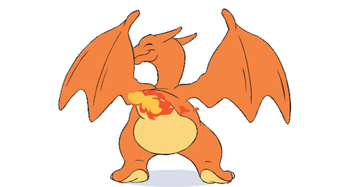

What is the 'secret recipe" to making a popular Pokemon?
×
Top Pokemon in Kanto is... Charizard! The chart beside displays the base stats of a Charizard.

×
Tooth
Modal box method used for map above, referred from w3schools:
This image of all regions will be cropped into individual image of each region. Each region will then be taking
a modal box. When a specific region in the map is clicked, the user will be shown the content in the respective
modal box. The image of the most popular pokemon in that region with a radar chart to show its stats can be
seen from the modal box. At the same time, the theme song for the clicked region will be played on click.